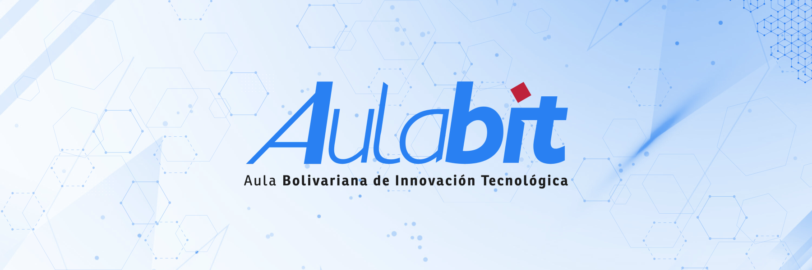
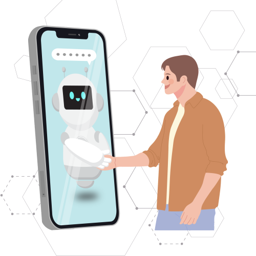
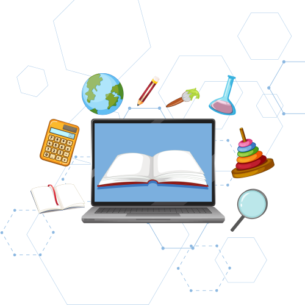

.png)



El Aula Bolivariana de Innovación Tecnológica (AulaBit) de la Fundación Bolivariana de Informática y Telemática (Fundabit) es un espacio para conectar, crear y crecer juntos. Aquí, la tecnología y la colaboración se unen para que vivas una experiencia educativa única, donde cada paso lo das tú. ¡Atrévete a explorar!

Tecnología e Innovación
Pedagogía y TICEs una plataforma de aprendizaje diseñada para atender las necesidades formativas de los tutores y tutoras CBIT a través de herramientas de vanguardia para la enseñanza y metodologías activas que promueven la colaboración, la creatividad y el pensamiento crítico de cada participante.
Potenciar el desarrollo profesional de tutores y tutoras CBIT a través de un entorno colaborativo y de
aprendizaje continuo para incrementar sus habilidades técnicas, pedagógicas y de gestión en pro de la
calidad educativa.
Ser un espacio de referencia de formación profesional que fomente el dominio de herramientas digitales, la aplicación de estrategias didácticas efectivas y el desarrollo de habilidades de gestión para transformar la enseñanza y el aprendizaje de toda la comunidad educativa.